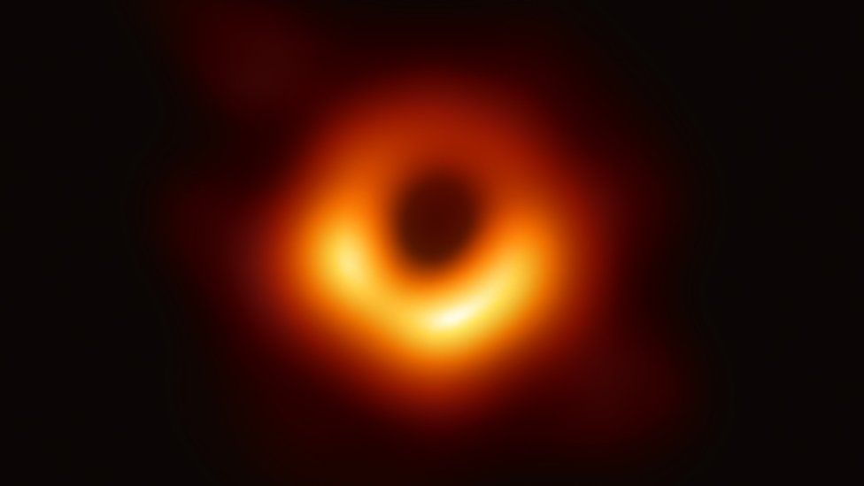

There is no oxygen in space so sound can not travel through the vibration of atoms and molecules.
In space, when two pieces of the same type of metal make contact, they will permanently bond together.
This is the first image of a black hole, this is the image that has made history.
A Black Hole is a point in space that are so dense, they create a deep gravity sink that pulls in anything that is around it, it is said that when anything that gets to the center of a black hole, it will get crushed.
The galaxy we live in is called the Milky Way Galaxy, the Milky Way Galaxy is said to collide with the Andromeda Galaxy in about 5 billion years, and the Milky Way Galaxy grows by merging with other galaxies through time.
Comets are usually made out of either frozen water,supercold methana, ammonia, and carbon dioxide ices.
Solar Eclipse happens while a moon is orbiting and moves between the sun and earth.
Mercury is the closest planet to the sun, a year on Mercury only lasts 88 earth days, and Mercury does not have any moons or rings.
A day on Venus takes 243 earth days, the surface temperature can rach 271°C, and it rotates in the opposite direction of earth.
Earth is the only planet that is not named after a god, Earth's molten core creates a magnetic field, and Earth is the only planet known to currently have life on it.
Mars is the home to the tallest mountain in the solar system, there have been signs of liquid found on Mars, Mars has seasons like Earth but are said to be twice as long, and Mars is said to be the most hospitable place for life with the exception of Earth.
Jupitar has at least 67 moons orbiting around it, Jupitar has a very strong magnetic field, Jupitar as a faint ring around it that is made up of various types of dust from comets, aseroids, and dust from some of it's moons, and Jupitar has the shortest day of the eight planet, lasting as long as 9 hours and 55 minutes.
Saturn is mostly made out of hydrogen, the magnetic field on Saturn is weaker than Earth's magnetic field, and Saturn gives off more energy than it gets from the Sun.
Uranus has the coldest temperature of -224°C then any other planet, Uranus has 27 known moons, and Uranus is known as the "Ice Giant".
Naptune has a very active climate, Neptune has an average surface temperture of -214°C, and Naptune has 14 moons,